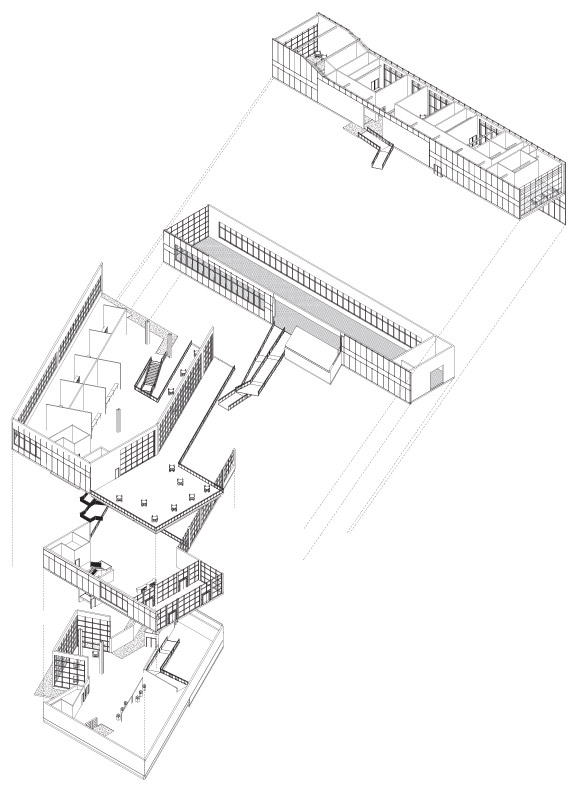

Riverwalk Connections
Tying the culture and history of Savannah, GA to the public
Laudeman, Sara M
ARCH 4101 - MA | Fall 2017 | University of North Carolina at Charlotte
Located on the historic Savannah, GA riverwalk, this project brings together cultural, social, and commercial uses to anchor the riverwalk to the city. The program consists of a small museum of the history of Savannah, a market hall that doubles as a community gathering center, and a series of both sit-down and take-away restaurants and dining areas.
This project situates itself between the industrial waterfront and the pedestrian scale of the public paths on the river. A tiered facade fronts the riverwalk supported by massive vierendeel trusses. Operable shading between the top chords of the trusses shelters a south-facing dining patio on the second level. The ground floor is home to a public lobby and space for the Historic Savannah Foundation and the Georgia Historical Society to serve visitors and tourists. The lower waterfront level offers sweeping views of the waterfront and a small museum on the history of the city. Coupled with the eastern wing, which is home to a double-height market hall on the ground level and formal dining on the level above, the project reaches out into the Savannah River while tying itself to the city of Savannah.

Riverwalk Connections aims to create interlocking spaces through a vertical circulation atrium. From the topmost floor, visitors can look down into the museum. From the bottom floor, visitors can look up into the atrium, towards the long gesture of the market hall, or out onto the river from the lounge and cafe area.
The facing of the project allows the use of view glass on large northern exposures over the river, while the structural system of massive trusses dominates the south facade in a neo-industrial nod to the history of Savannah’s riverfront industry. The double-height lower lobby offers a place to gather and watch the riverfront, or to step outside onto the pedestrian walkway at water level. The vertical atrium is the organizing principle of the scheme. It offers direct lines of sight throughout the project while partitions and stairs guide the circulation path between water, ground, and air.